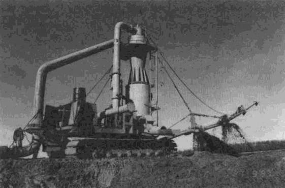
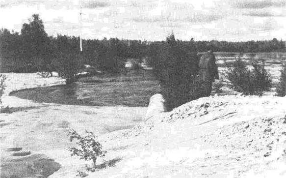
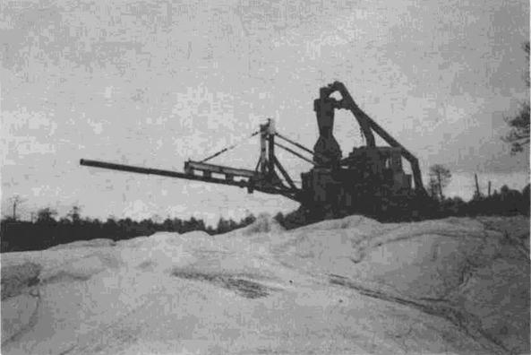

ОТКРЫТОЕ АКЦИОНЕРНОЕ ОБЩЕСТВО "ГАЗПРОМ"
ВЕДОМСТВЕННЫЕ СТРОИТЕЛЬНЫЕ НОРМЫ
МЕТОДИКА
НА ГИДРОМЕХАНИЗИРОВАННЫЕ РАБОТЫ
ПРИ РЕМОНТЕ ТРУБОПРОВОДОВ
В ГАЗОВОЙ ПРОМЫШЛЕННОСТИ
ВСН 39-1.10-002-2000
МОСКВА 2000
Система нормативных документов в газовой промышленности
ВЕДОМСТВЕННЫЕ СТРОИТЕЛЬНЫЕ НОРМЫ
МЕТОДИКА
НА ГИДРОМЕХАНИЗИРОВАННЫЕ РАБОТЫ ПРИ РЕМОНТЕ
ТРУБОПРОВОДОВ В ГАЗОВОЙ ПРОМЫШЛЕННОСТИ
ВСН 39-1.10-002-2000
ОАО «ГАЗПРОМ»
Дочернее открытое акционерное общество «Оргэнергогаз»
Общество с ограниченной ответственностью
Информационно-рекламный центр газовой промышленности"
(ООО "ИРЦ Газпром")
Москва 2000
ПРЕДИСЛОВИЕ
РАЗРАБОТАН ДАО «Оргэнергогаз»
СОГЛАСОВАН Федеральным горным и промышленным надзором России от 31 августа 1999 г. № 10-03/566, Управлением по транспортировке газа и газового конденсата ОАО «Газпром», Управлением газового надзора ОАО «Газпром»
ВНЕСЕН Управлением по транспортировке газа и газового конденсата ОАО «Газпром»
УТВЕРЖДЕН Заместителем Председателя Правления В.В. Ремизовым 4 ноября 1999 г.
ВВЕДЕН В ДЕЙСТВИЕ Приказом ОАО «Газпром» от 15 февраля 2000 г. № 27 с 15 марта 2000 г. сроком на 3 года
ВВЕДЕН ВПЕРВЫЕ
ИЗДАН Обществом с ограниченной ответственностью "Информационно-рекламный центр газовой промышленности (ООО "ИРЦ Газпром")
СОДЕРЖАНИЕ
ВВЕДЕНИЕ
Методика на гидромеханизированные работы при ремонте трубопроводов в газовой промышленности разработана на основе анализа существующих нормативных документов, законченных научно-исследовательских работ, отечественного и зарубежного опыта проектирования, строительства и эксплуатации трубопроводных систем и гидромеханизированного намыва грунтовых сооружений. В ней отражены новые технические и технологические решения намыва грунтовых насыпей.
Методика предназначена для всех организаций, занимающихся ремонтом напорных трубопроводов с использованием гидромеханизации, а также газотранспортных предприятий, эксплуатирующих эти трубопроводы.
Методика разработана ДАО «Оргэнергогаз» ОАО «Газпром».
В разработке методики принимали участие: Салюков В.В. (ОАО «Газпром»), Трофимов П.П., Муханов Н.А., Спиридонов В.В., Спиридонова Н.В. (ДАО «Оргэнергогаз»).
ВСН 39-1.10-002-2000
Система нормативных документов в газовой промышленности
Ведомственные строительные нормы
Методика
на гидромеханизированные работы при ремонте трубопроводов
в газовой промышленности
Дата введения 2000-03-15
1.1. Методика распространяется на организацию работ при ремонте и восстановлении грунтовых обвалований и насыпей трубопроводов и временных дорог трубопроводных систем, эксплуатирующихся в системе ОАО «Газпром».
1.2. Методика предназначена для всех организаций, занимающихся ремонтом напорных трубопроводов низкого, среднего и высокого давления с использованием гидромеханизации, а также для газотранспортных предприятий, эксплуатирующих эти трубопроводы.
1.3. Методика определяет принципиальные технические решения, технологический процесс, взаимоотношения и обязанности сторон, участвующих в ремонте с использованием гидромеханизации, а также правила охраны окружающей среды и техники безопасности.
1.4. Методика разработана в развитие и дополнение действующих нормативных документов и правил, требованиями которых надлежит руководствоваться при организации и проведении работ, предусмотренных настоящей методикой.
1.5. Гидромеханизация является одним из эффективных и высокопроизводительных способов комплексной механизации земляных работ при ремонте трубопроводов, обеспечивающих снижение стоимости строительства, сокращение трудовых затрат и внедрение ресурсосберегающих технологий.
1.6. Применение способов гидромеханизации позволяет осуществлять восстановление разрушенных грунтовых насыпей, в которых проложены трубопроводы, без их остановки на ремонт и снижения в них давления, то есть производить ремонт трубопроводных систем одновременно с их нормальной эксплуатацией.
1.7. Работы по намыву насыпей трубопроводов должны выполняться по проектно-сметной документации, разработанной в соответствии с нормативными документами и стандартами и утвержденной в установленном порядке.
1.8. Настоящую методику следует соблюдать при проектировании земляных сооружений трубопроводов, составлении проектов производства работ и организации строительства, а также при их возведении, реконструкции и ремонте.
1.9. При производстве земляных работ на строительстве трубопроводных систем, кроме настоящей методики, следует выполнять требования соответствующих СНиП, учитывающих специфику возведения этих сооружений, СНиП 3.02.01-87 «Земляные сооружения, основания и фундаменты», СНиП 11-02-96 «Инженерные изыскания для строительства», СНиП часть 4 сметные нормы, а также требования СНиП по организации строительного производства, геодезическим работам, технике безопасности и правилам пожарной безопасности при производстве строительно-монтажных работ.
2.1. Гидромеханизация, как особая технология для возведения сооружений обустройства газовых месторождений и прокладки трубопроводных систем может быть эффективно использована: при возведении грунтовых оснований наземных сооружений, площадок для бурения и эксплуатации скважин, насыпей дорог и трубопроводов, ремонте трубопроводных систем, создании дамб, складов грунта, разработке каналов и траншей, на переходах трубопроводов через реки, для производства дноуглубительных работ, добычи балласта, песка, гравия и т.д.
2.2. Гидромеханизация - один из эффективных видов комплексной механизации земляных и горных работ, при котором весь комплекс работ (разработка, гидротранспортирование и укладка грунта в земляное сооружение) производится гидравлическим способом в едином непрерывном, технологическом цикле (Приложение).
2.3. Необходимо учитывать особенности применения гидромеханизации при замыве магистральных газопроводов в заболоченных, подтапливаемых и труднодоступных местах Западной Сибири. По сравнению с грунтовой отсыпкой сухоройным способом гидромеханизация обеспечивает:
- фиксацию газопровода в том положении, которое он занял под воздействием различных факторов с минимальными напряжениями, за счет равномерного замыва трубопровода грунтом со всех сторон, а также замыва пазух, промоин и т.д.;
- передвижение строительных механизмов на ранее намытых участках, обеспечивающих создание защитного слоя грунта;
- «бесконтактный» замыв трубопровода, сохраняющий изоляционное покрытие;
- равномерную тепловую защиту газопровода грунтом;
- использование откосов намывных насыпей под эксплуатационные дороги для обслуживания и ремонта газопровода.
2.4. С целью улучшения технико-экономических показателей гидромеханизированных методов устройства грунтовых сооружений возможно использование сгустителей-грунтоукладчиков, позволяющих уменьшить объемы укладываемого грунта за счет увеличения крутизны откосов, сократить продолжительность работ.
2.5. Технические решения протяженных сооружений, возводимых с использованием методов гидромеханизации (дорог, трубопроводов, насыпей и тому подобных), могут быть значительно улучшены при использовании фильтрующих нетканых синтетических материалов (геотекстильных).
3.1. В состав инженерных изысканий должны входить геодезические, геологические, гидрологические, гидрометеорологические изыскания.
3.2. Инженерно-геодезические изыскания должны обеспечить получение топографо-геодезических материалов по объекту строительства.
3.3. Инженерно-геологические изыскания ведут с целью выяснения геологических условий возведения сооружений и выявления месторождений строительных грунтов, пригодных по качеству и достаточных по запасам для строительства проектируемых земляных сооружений или добычи нерудных строительных материалов с учетом возможности разработки их способом гидромеханизации. Для чего ведут поисковые и геологоразведочные работы.
3.4. Гидрологические изыскания проводятся с целью определения обводненности месторождения грунтов, уровня и дебита грунтовых вод, коэффициента фильтрации грунтов, режима водотоков (средних, меженных и паводковых уровней и расходов воды, скоростей течения, характера и времени паводков, половодья, ледового режима, мутности воды, заносимости и т.д.), сведений об условиях судоходства, наличии гидротехнических сооружений, населенных пунктах, потребителях воды и водозаборах, расположенных ниже мест сброса осветленной воды с карт намыва.
3.5. Инженерно-гидрометеорологические изыскания должны обеспечить получение материалов по речной гидрологии, гидрографии, климатологии и метеорологии.
3.6. Транспортные изыскания должны включать данные о наличии автомобильных и железных дорог, водных путей в районе строительства, возможности использования дорог и мостов для перевозки оборудования гидромеханизации, водных путей для проводки караванов с земснарядами и гружеными баржами.
3.7. Энергетические изыскания включают изучение схемы электроснабжения и возможности обеспечения электроэнергией установок гидромеханизации от электрических систем, получение согласия на присоединение электроустановок, выбор и согласование трассы строительства высоковольтных воздушных линий.
3.8. Для экономического обоснования проекта определяют транспортную схему доставки материалов и оборудования на объект, собирают исходные данные для определения сметной стоимости их доставки, привязки расценок и стоимости электроэнергии к местным условиям, определяют затраты на возмещение экологического ущерба и охрану окружающей среды и т.д.
3.9. Проектирование объектов, сооружаемых гидромеханизированно, должно осуществляться на основании решений, принятых в утвержденных технико-экономических обоснованиях (ТЭО) или технико-экономических расчетах (ТЭР).
3.10. Состав, порядок разработки, согласования и утверждения проектно-сметной документации на строительство сооружений регламентирует СНиП 11-01-95 «Инструкция о порядке разработки, согласования, утверждения и составе проектной документации на строительство предприятий, зданий и сооружений».
3.11. Земельные участки, отводимые под карьеры, штабеля песка, отстойники, временные подъездные пути и другие нужды гидромеханизированной разработки грунта, надлежит согласовать в соответствии с Земельным и Водным кодексами России.
3.12. На рекультивацию земель, выделяемых во временное пользование, составляется проект, который согласовывается с основным землепользователем (совхозом, колхозом, лесхозом), органами государственного контроля за использованием земель, органами рыбоохраны в случае размещения карьеров, карт намыва песка на акватории водоема и в береговой полосе и утверждается в установленном порядке.
3.13. Земельные участки, отводимые во временное пользование при гидромеханизированной разработке, подлежат возврату землепользователям после приведения их в состояние, соответствующее основным положениям по восстановлению земель.
3.14. В состав материалов на проведение гидромеханизированных работ включаются:
- перечень водопользователей (промышленного, хозяйственно-питьевого, культурно-бытового и рыбохозяйственного водопользования) в районе работ и возможного распространения их влияния;
- рыбохозяйственная характеристика водоема с указанием сроков нерестового периода и массовых миграций ценных промысловых рыб;
- природная характеристика береговой зоны;
- размеры водоохранной и прибрежной полосы по берегам водных объектов;
- информация о перспективах развития объектов водопользования и землепользования в районе возможного влияния работ.
3.15. В составе документации должны быть предусмотрены следующие решения и мероприятия, позволяющие снизить уровень воздействия на окружающую среду:
- организация оборотных систем промводоснабжения;
- организация технологического контроля за состоянием грунтов и водной среды;
- рекультивация и культивация карьеров и отвалов грунта, а также территории всех объектов после окончания гидромеханизированных работ.
4.1. Для насыпей дорог и трубопроводов, возводимых средствами гидромеханизации, применяются дренирующие грунты с коэффициентом фильтрации не менее 0,5 м/сут.
4.2. При разработке и гидравлической укладке грунтов способом гидромеханизации происходит улучшение качества (обогащение) грунтов за счет отмыва части мелких и пылеватых фракций, что позволяет для намыва насыпей использовать мелкие и пылеватые пески и супеси.
4.3. При использовании гидромеханизированных способов производства работ необходимо учитывать основные физико-механические свойства грунтов (гранулометрический состав, плотность, коэффициент сцепления, угол внутреннего трения, угол откоса при намыве и другие).
5.1. До начала сооружения (ремонта) объекта должны быть выполнены мероприятия и работы по подготовке строительного производства, включая проведение общей организационно-технической подготовки и подготовку к производству гидромеханизированных работ. Проектирование гидромеханизированных работ может быть 2-х стадийным (проект, рабочий проект) и одностадийным (рабочий проект).
5.2. Общая организационно-техническая подготовка включает: подготовку проектно-сметной документации, отвод в натуре площадки (трассы), заключение договоров подряда и субподряда, строительство подъездных путей, обеспечение электроэнергией, материально-техническими ресурсами, решение вопросов о наращивании мощности, передислокации подразделений и земснарядов и т.д.
5.3. Заказчик должен передать генподрядчику утвержденный проект и комплект рабочей документации на первый год строительства (ремонта) не позднее, чем за 6 месяцев перед началом строительства.
5.4. Проект организации строительства (ПОС) разрабатывается проектной организацией и согласовывается с генподрядной организацией. В составе ПОС даются решения и на специальные работы, которые при необходимости могут разрабатываться специализированными проектными организациями. В состав ПОС включают: календарный план строительства, технологические схемы возведения сооружений и методы производства гидромеханизированных и других работ, указания по геодезическому обеспечению строительства и производству разбивочных работ, схему пропуска паводка (ледохода), графики потребности в материалах, строительных машинах и рабочих кадрах и т.д.
5.5. Проект производства работ (ППР), определяющий технологию, сроки выполнения и порядок обеспечения ресурсами строительно-монтажных работ и служащий основным руководящим документам при организации производственных процессов по возведению сооружений на выполнение гидромеханизированных и других видов специальных работ разрабатывается организацией, выполняющей эти работы или по ее заказу проектной организацией. Осуществление строительства и гидромеханизированных работ без ППР запрещается.
5.6. Организации: проектные, осуществляющие строительство и гидромеханизированные работы должны иметь лицензии на право осуществления соответствующих работ.
5.7. Проект производства гидромеханизированных работ должен содержать:
- строительный генплан с указанием расположения земснарядов, трубопроводов, линий электропередачи, границ горного и земельного отводов;
- паспорт карьера;
- календарный график основных строительно-монтажных и земляных работ с выделением работ подготовительного периода;
- календарный план разработки месторождения;
- конструктивную схему и описание возводимого земляного сооружения;
- технологию производства и схему организации работ;
- график потребности в земснарядах, вспомогательной технике, плавсредствах, материалах и рабочих кадрах;
- план размещения геодезических и разбивочных знаков;
- конкретные технические решения по технике безопасности и т.п.
5.8. По составу, содержанию и порядку разработки ПОС и ППР, а также формы основных проектных документов в них, должны соответствовать требованиям СНиП 3.01.01-85 «Организация строительного производства».
5.9. Во избежание всплытия во время производства гидромеханизированных работ трубопроводы, имеющие положительную плавучесть, должны быть пригружены грунтом, либо анкерными устройствами, реже пригрузами против всплытия в начале намыва грунта. Если проектом предусмотрено применение геотекстильных материалов (ГСМ) в качестве обвалования, балластировки трубопроводов или основания насыпей дорог и трубопроводов, они должны быть своевременно уложены в сооружение.
5.10. При производстве работ средствами гидромеханизации по замыву грунтом оголившихся участков газонефтепроводов рекомендуется использовать один из способов намыва: безэстакадный, послойногрунтоопорный, низконапорный или с применением сгустителя-грунтоукладчика. Конкретный способ намыва выбирается проектом.
5.11. В зависимости от местных условий могут использоваться различные технологические схемы гидромеханизации для намыва грунтовых сооружений:
- первая схема предусматривает намыв грунта земснарядом непосредственно в профиль сооружения (дороги, насыпи трубопровода и т.д.) со свободным растеканием смеси;
- вторая схема предусматривает намыв грунта в штабель (склад) с последующей его автовозкой и механической укладкой в сооружение;
- третья схема - смешанная технология, при которой могут применяться обе схемы одновременно для различных частей (элементов) сооружения;
- четвертая схема предусматривает намыв грунта земснарядом с использованием сгустителя-грунтоукладчика, обеспечивающего увеличение крутизны откосов, снижение необходимого объема грунта и сроков проведения работ.
6.1. Гидромеханизированные работы производятся в соответствии с требованиями водоохранного законодательства и нормативных документов об охране окружающей среды и водных ресурсов, применительно к условиям производства работ средствами гидромеханизации.
6.2. До начала работ должны быть проведены изыскания природоохранного назначения соответствующими специализированными организациями. Результаты изысканий природоохранного назначения включаются в состав раздела «Охрана окружающей среды» рабочего проекта на строительство.
6.3. Земельные участки, отводимые во временное пользование при гидромеханизированной разработке земель, подлежат возврату землепользователям после приведения их в состояние, соответствующее основным положениям по восстановлению земель, нарушенных при проведении геологоразведочных, строительных и иных работ. Рекультивация земель входит в состав раздела «Охрана окружающей среды».
6.4. На рекультивацию земель, выделяемых во временное пользование, составляется проект, который согласовывается с основным землепользователем, органами государственного контроля за использованием земель, органами рыбоохраны в случае размещения карьеров, карт намыва песка на акватории и в береговой полосе и утверждается в установленном порядке.
6.5. Затраты на выполнение природоохранных мероприятий и рекультивацию земель должны быть включены в сметную стоимость гидромеханизированных работ.
6.6. При гидромеханизированных земляных работах для намыва сооружений рекомендуется применять оборотную схему водоснабжения с подпиткой из источников поверхностных и подземных вод.
В случае, когда оборотную схему применить нельзя, должны разрабатываться мероприятия по дополнительному осветлению сбросных вод гидромеханизации (устройство дополнительных отстойников и др.).
7.1. При производстве работ способом гидромеханизации следует руководствоваться правилами техники безопасности, регламентируемыми СНиП III-42-80* изд. 1993 г. «Магистральные трубопроводы. Правила производства и приемки работ» и «Едиными правилами техники безопасности при разработке месторождений полезных ископаемых открытым способом», утвержденными Госгортехнадзором России от 21.07.92 г. № 20, СНиП 3.02.01-87 «Земляные сооружения, основания и фундаменты», «Правилами по охране труда при производстве гидромеханизированных работ», СНиП 2.05.06-85* «Магистральные трубопроводы», «Правилами охраны магистральных газопроводов», инструкциями на технике безопасности труда и ВСН-51-1-80 «Инструкцией по производству строительных работ в охранных зонах магистральных трубопроводов министерства газовой промышленности».
7.2. Все временные сооружения на строительных площадках в карьере, на картах намыва и на площадках энергетических установок должны удовлетворять требованиям СНиП 2.01.02-85* изд. 1995 г. «Противопожарные нормы».
7.3. Гидромеханизированные работы в охранных зонах магистральных газопроводов являются работами с повышенной опасностью и на их выполнение необходимо оформление и выдача наряд-допуска на срок, необходимый для выполнения заданного объема работ.
7.4. Организация, получившая разрешение на производство работ в охранной зоне магистрального газопровода, обязана до начала работ вызвать представителей эксплуатирующей организации для установления по технической документации, приборами-искателями точного местонахождения трубопровода, определения его технического состояния. В случае обнаружения утечек продукта они должны быть устранены силами и средствами эксплуатирующей организации до начала работ.
7.5. Определение местонахождения, техническое состояние подземного магистрального газопровода и его сооружений производится в границах всей зоны производства работ и ответственность за это несет эксплуатирующая организация.
7.6. Трасса трубопроводов и его сооружений в границе зоны производства работ должна быть закреплена знаками высотой 1,5-2 м с указанием фактической глубины заложения, установленными на прямых участках в пределах видимости, но не более 500 м, на всех углах поворота, в местах пересечения со строящимися коммуникациями. Составляется акт с участием подрядной и эксплуатирующей организации (прилагается ситуационный план трассы).
7.7. Весь персонал, занятый на производстве строительно-монтажных и других работ в охранной зоне, должен быть обучен и проинструктирован о методах безопасного ведения работ, ознакомлен с местонахождением ниток газопроводов и их сооружений, их обозначений на местности (под роспись в журнале).
7.8. Земляные работы в полосе, ограниченной расстоянием 2,5 м в обе стороны от трубопровода, должны производиться только вручную в присутствии представителя эксплуатирующей организации.
7.9. В случае повреждения газопровода или обнаружения утечки продукта из него в процессе производства работ весь персонал и технические средства должны быть немедленно отведены за пределы минимальных расстояний для городов и населенных пунктов согласно СНиП по проектированию магистральных трубопроводов (350 м), а эксплуатирующая организация должна быть извещена о повреждении (утечке), а по прибытии должна принять меры для быстрейшей ликвидации аварии.
7.10. При производстве работ в охранной зоне механизмы, трубосварочные базы, стеллажи, стоянки механизмов, склады горючих и смазочных материалов, стройматериалов, оборудования, вахтовый поселок должны размещаться за пределами минимальных расстояний от оси газопровода на 350 м (СНиП 2.05.06-85*).
«Методика на гидромеханизированные работы при ремонте трубопроводов в газовой промышленности» распространяется на ремонт грунтовых обвалований, насыпей трубопроводов и временных дорог трубопроводных систем, эксплуатирующихся в системе ОАО «Газпром».
«Методика» позволит упорядочить и регламентировать гидромеханизированные работы при ремонте трубопроводных систем и накопить необходимый опыт и знания для создания технических требований на проведение таких работ для сооружения различных объектов газовой промышленности.
В настоящее время многие участки газонефтепроводных систем, проложенных на заболоченных и периодически обводняемых территориях оголены и требуют засыпки грунтом. Сложность проведения этих работ заключается в возможности их проведения лишь в зимних условиях, когда поверхность болот замерзает, путем засыпки заранее заготовленным грунтом. Вместе с этим не все болота достаточно промерзают, что резко усложняет работы, так как предварительно необходимо обеспечить безопасный проезд вдоль трубопроводов и к карьерам грунта.
Кроме того, при засыпке трубопроводов мерзлым грунтом возможно повреждение их изоляционного покрытия. Такой ремонт трубопроводов требует снижения в них давления, а в отдельных случаях и отключения участков системы трубопроводов. Применение гидромеханизированного замыва грунтом трубопроводов может производиться в летнее время при нормальном эксплуатационном режиме их работы и совершенно безопасно для изоляционного покрытия. Замывая грунтом трубопроводы в том положении, которое они заняли в процессе многолетней эксплуатации, в них не возникает дополнительных напряжений от изменения их геометрического положения. Вместе с этим, создается защита от механических повреждений и резкого изменения внешних температурных воздействий.
Условием надежной эксплуатации газопроводов является их заглубление в грунт на 0,8 - 1,2 м от его поверхности. В условиях Западно-Сибирской низменности, на заболоченной местности, обеспечить стабильное заглубление газопровода, особенно при диаметре до 1,5 м, весьма сложно и, несмотря на различные приемы фиксации (железобетонные пригрузки, свайные якоря и др.), часто происходит «всплытие» и оголение газопроводов. Грунтовая засыпка «сухим» способом требует использования землеройной техники, что в условиях работы на действующих газопроводах создает опасность их повреждения и вероятность аварий с серьезными последствиями.

Сгуститель-грунтоукладчик СГУ-2000
ЗАО «Компания «CMC», начиная с 1985 года, осваивает новый способ замыва газопроводов с использованием средств гидромеханизации. Предложен, экспериментально доказан и доведен до широкого практического применения способ торцевого замыва газопроводов параллельными проходками с шириной замыва до 300 м захватывающий до шести «ниток» труб.
За последние 10 лет ЗАО «Компания «CMC» выполнила работы по замыву оголившихся действующих ниток трубопроводов на нескольких участках газопровода Уренгой-Сургут-Челябинск для предприятий «Сургутгазпрома» общей протяженностью 198 км (в однониточном исполнении). Выполненные работы и натурные испытания показали, что выбранная последовательность подачи гидросмеси на объект и очередность замыва "ниток" газопровода позволяет обеспечить:
Многолетний опыт эксплуатации ранее замытых участков свидетельствует, что рецидивов «всплытия» газопровода не наблюдается, а откосы замывных насыпей могут использоваться под эксплуатационные дороги для наблюдения за газопроводом, текущего ремонта, и т.п.

Замытый участок газопровода
Научно-практическая работа института «Оргэнергогаз» ОАО «Газпром» и Верхне-Волжского peгионального научного центра Академии Транспорта, проведенная в 1997-1998 годах по обследованию и изучению физико-механических процессов происходящих на учаcткax замытых газопроводов, показала полную надежность производства гидромеханизированных работ, хорошее состояние газопровода с точки зрения физико-механических процессов и высокую степень безопасности производства работ.
Анализ предложенной технологии выявил возможности ее совершенствования в части сокращения объема грунта, необходимого для ремонта и уменьшения его перемыва, что приводит к сокращению сроков восстановительных работ. В результате, группой специалистов ЗАО «Компания «CMC» предложен более эффективный способ замыва трубопроводов (Патент РФ № 2078016), сущность которого заключается в том, что подачу гидросмеси oт земснаряда в зону замыва оголенных газопроводов осуществляют посредством распределительной трубы, поворотно закрепленной на концевом звене пульпопровода земснаряда. Сначала формируют опорную площадку вдоль газопровода для наращивания пульпопровода, а затем поворачивают распределительную трубу перпендикулярно газопроводу для формирования защитного слоя над последним. На рис. 1 показана схема замыва для двух ниток газопровода. Такая технология, сохраняя преимущества торцевого намыва, перечисленные выше, значительно сокращает объем необходимого для замыва грунта, уменьшает его перемыв и, как следствие, повышает производительность работ и сокращает время их проведения.
Рис. 1.
Еще более эффективной является технология замыва газопроводов с использованием сгустителей гидросмеси. В отличие от предыдущей, на конце пульпопровода земснаряда устанавливается сгуститель гидросмеси, который доводит исходную гидросмесь до концентрации 70-85%. При такой концентрации гидросмеси грунт при формировании защитного слоя на замываемом газопроводе будет укладываться с углом откоса 1:8-1:10 вместо 1:25-1:40, что резко сокращает объем необходимого грунта, сроки проведения работ и требует меньшей площади карьера.
Технология намыва с использованием сгустителей может быть применена не только для восстановительных работ, но и строительства новых газопроводов на заболоченных участках трасс. Возможность замыва вновь строящихся газопроводов без рытья траншей, без применения пригрузок и якорения, а также возможность выполнения работ в летнее время создает условия для резкого сокращения затрат и сроков строительства.
Такая технология работы земснарядов со сгустителями рекомендована Ханты-Мансийским и Сургутским комитетами по охране природы и природных ресурсов к внедрению в условиях Западной Сибири как единственная отвечающая экологическим требованиям.
ЗАО «Компания «CMC» создала и провела производственные испытания самоходных сгустителей производительностью 800 и 2000 м3/час по гидросмеси на базе экскаваторов и бульдозеров.

Сгуститель-грунтоукладчик СГУ-800
Сгустители успешно использовались в 1994-1996 годах для намыва полотна автодорог на Лянторском и Кандинском месторождениях, в 1997 году при намыве автодороги на Покомасовском месторождении, в 1998 году при строительстве автодороги Нефтеюганск-Сургут и намыве вдольтрассового проезда нефтепровода на объекте «Кедровый». Изготовление сгустителей-грунтоукладчиков производится на экспериментальном машиностроительном заводе "Лиски-Металлист".
В настоящее время для комплексного решения задач по строительству создана ОАО «Финансово-промышленная Корпорация «Гидромехстрой», объединяющая 17 предприятий, включая в том числе гидромеханизированные, дорожно-строительные организации и предприятия по строительству магистральных трубопроводов. Это позволяет более эффективно вести строительство и ремонт магистральных трубопроводов и притрассовых дорог. Корпорация создана по холдинговому принципу, что позволяет создать единое экономическое пространство. Наличие в Корпорации Торгового дома создает условия для решения вопросов финансирования с помощью существующих схем взаиморасчетов товарной продукцией, ГСМ, векселями и т.п.